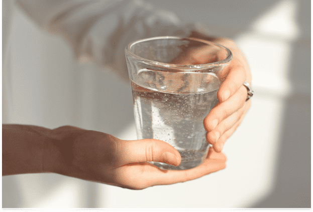
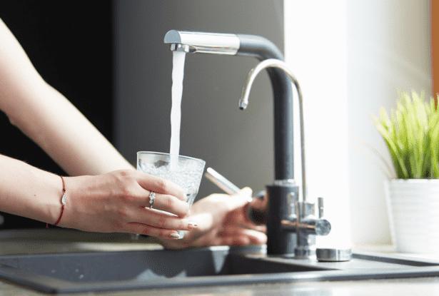
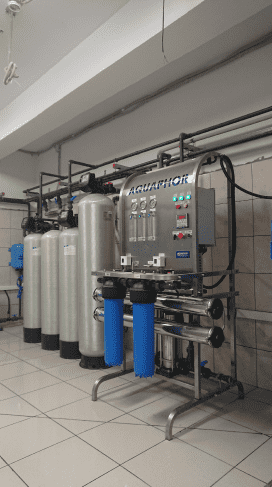
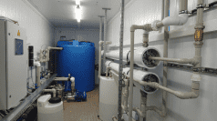
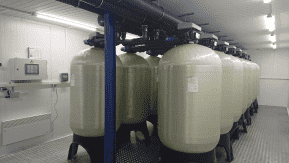
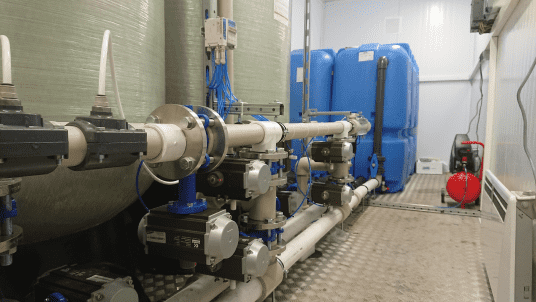
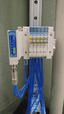
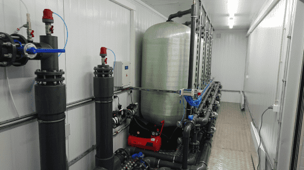
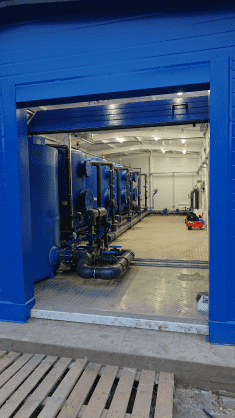

Аквафор Трейдинг
Системы
очистки воды
Системы
очистки воды
Поможем выбрать, привезем,
установим в короткие сроки.
установим в короткие сроки.

Качество воды – качество жизни
Неочищенная вода из природных источников является благоприятной средой для бактерий и вирусов, а переизбыток металлов в питьевой воде влечет за собой проблемы со здоровьем.
К тому же, соли и металлы, содержащиеся в такой воде, оседают внутри сантехники, провоцируя образование налета и ржавчины, и, как следствие, быстрый износ техники.
Как сделать воду безопасной?
К счастью, современные технологии водоочистки позволяют решить все эти проблемы с помощью систем фильтрации, которые подбираются исходя из каждого конкретного случая.
Разобраться в разнообразии продукции вам помогут наши специалисты: высококвалифицированные химики-технологи, инженеры и менеджеры.
Оставьте заявку
Наш специалист
свяжется с вами
в течении15минут
свяжется с вами
в течении15минут
Каталог

Очистка воды
в коттедже
в коттедже
Комплексные решения по удалению любых загрязнений, встречающихся в природной воде.
Подробнее

Ультрафильтрация
Избавит воду от железа, органических примесей, сделает ее прозрачной и восстановит ценные компоненты, содержащиеся в жидкости.
Подробнее

Очистка воды
от жесткости
от жесткости
Позволит забыть о накипи и ржавчине, предотвратит проблемы со здоровьем, вызванные потреблением большого количества минералов и солей.
Подробнее

Обработка воды ультрафиолетом
Безопасный и экономичный способ избавиться от патогенных микроорганизмов в воде без применения химреагентов и термической обработки.
Подробнее

Станции обезжелезивания
Вернут воде прозрачность и нормальный вкус, избавят от угроз, связанных с вредным воздействием железа на организм человека, сберегут сантехническое оборудование от налета и ржавчины.
Подробнее

Очистка воды из скважины
Комплекс работ по очистке воды из природных источников и доведению ее до санитарных норм.
Подробнее

Очистка воды
в котельной
в котельной
Предотвратит образование минеральных отложений внутри водонагревательных котлов.
Подробнее

Блочно-модульные станции
Полный пакет работ по проектированию, установке и обслуживанию станций, предназначенных для водозаборных узлов (ВЗУ).
Подробнее

ЛОС
Блочно-модульные установки для очистки хозяйственно-бытовых и промышленных сточных вод.
Подробнее
О компании
У нас за плечами многолетний опыт работы. Сотрудниками нашей компании на сегодняшний день установлено более тысячи систем водоподготовки для объектов различной величины.
Мы поставляем оборудование только ведущих зарубежных и отечественных производителей, которые гарантируют надежность своей продукции.

СМИ о нас
Мы работаем с государственным заказом по Федеральной Целевой Программе
«Чистая вода».
«Чистая вода».

ТНТ-Поиск: Открытие ВЗУ в Соголево

Станция обезжелезивания в Лозе

Новая станция обезжелезивания
В числе наших
клиентов
клиентов
Галлерея работ







Этапы работы:

Вы оставляете заявку
и мы связываемся
с вами в ближайшие
сроки
и мы связываемся
с вами в ближайшие
сроки
Специалисты выезжают
к вам для проведения
подготовительных работ
к вам для проведения
подготовительных работ
Разрабатываем
меры по улучшению
качества воды
меры по улучшению
качества воды
Доставляем системы
очистки на объект
очистки на объект
Устанавливаем
оборудование
оборудование
Оставьте заявку
Наш специалист
свяжется с вами
в течении15минут
свяжется с вами
в течении15минут